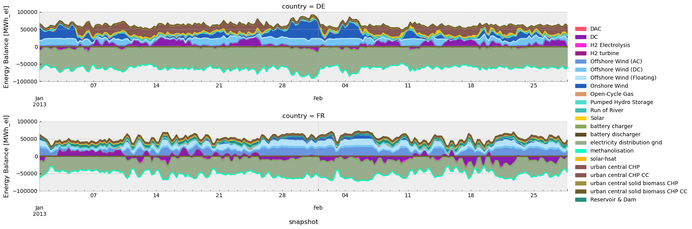
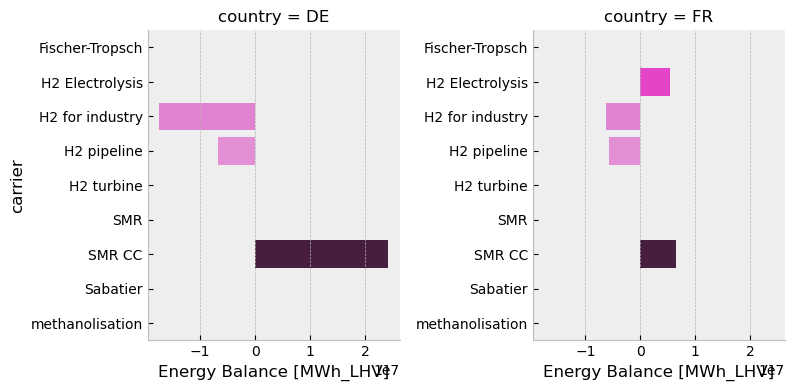
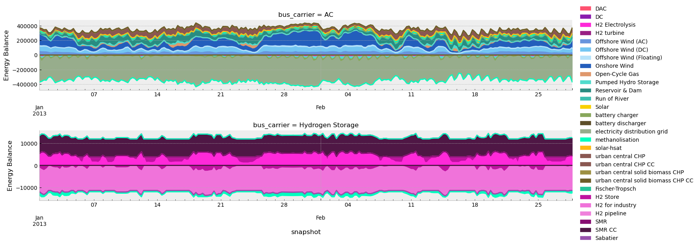
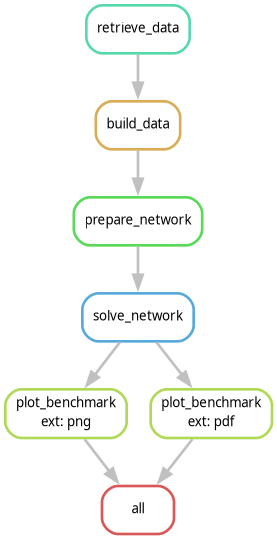

Workshop 4#
# To run this notebook in Google Colab, uncomment the following line:
# !pip install pypsa pandas geopandas xarray matplotlib seaborn cartopy snakemake graphviz snakemake-storage-plugin-http pdf2image atlite fiona powerplantmatching folium mapclassify hvplot geoviews plotly highspy holoviews
# !apt-get install poppler-utils
import os
import shutil
import warnings
import zipfile
from datetime import datetime
from pathlib import Path
from urllib.request import urlretrieve
import cartopy.crs as ccrs
import folium
import geopandas as gpd
import holoviews as hv
import hvplot.pandas
import mapclassify
import matplotlib.pyplot as plt
import numpy as np
import pandas as pd
import pypsa
import seaborn as sns
from IPython.display import SVG, Code, IFrame, Image, display
from matplotlib.ticker import MultipleLocator
from pdf2image import convert_from_path
from pypsa.plot.maps.static import (
add_legend_circles,
add_legend_lines,
add_legend_patches,
)
plt.style.use("bmh")
pypsa.options.params.statistics.round = 3
pypsa.options.params.statistics.drop_zero = True
pypsa.options.params.statistics.nice_names = False
plt.rcParams["figure.figsize"] = [14, 7]
Load example data#
def unzip_with_timestamps(zip_path, extract_to, keep_zip=True):
"""Unzip a file while preserving original file timestamps."""
with zipfile.ZipFile(zip_path, "r") as zip_ref:
for member in zip_ref.infolist():
# Extract the file
zip_ref.extract(member, extract_to)
# Get the extracted file path
extracted_path = os.path.join(extract_to, member.filename)
# Get the modification time from the zip file
date_time = datetime(*member.date_time)
timestamp = date_time.timestamp()
# Set both access and modification times
os.utime(extracted_path, (timestamp, timestamp))
if not keep_zip:
os.remove(zip_path)
from urllib.request import urlretrieve
urls = {
"pre-network.nc": "https://storage.googleapis.com/open-tyndp-data-store/workshop-01/pre-network.nc",
"post-network.nc": "https://storage.googleapis.com/open-tyndp-data-store/workshop-01/post-network.nc",
"bidding_zones.geojson": "https://storage.googleapis.com/open-tyndp-data-store/workshop-01/bidding_zones.geojson",
"data/data_raw.csv": "https://storage.googleapis.com/open-tyndp-data-store/workshop-02/data_raw.csv",
"data/open-tyndp-20251016.zip": "https://storage.googleapis.com/open-tyndp-data-store/workshop-02/open-tyndp-20251016.zip",
"data/network_NT_presolve_highres_2030.nc": "https://storage.googleapis.com/open-tyndp-data-store/workshop-02/network_NT_presolve_highres_2030.nc",
"Snakefile": "https://raw.githubusercontent.com/open-energy-transition/open-tyndp-workshops/792b8474ab5096e5ab8db2822af4fcd9fe659eb6/open-tyndp-workshops/Snakefile",
"scripts/build_data.py": "https://raw.githubusercontent.com/open-energy-transition/open-tyndp-workshops/792b8474ab5096e5ab8db2822af4fcd9fe659eb6/open-tyndp-workshops/scripts/build_data.py",
"scripts/prepare_network.py": "https://raw.githubusercontent.com/open-energy-transition/open-tyndp-workshops/792b8474ab5096e5ab8db2822af4fcd9fe659eb6/open-tyndp-workshops/scripts/prepare_network.py",
"scripts/filter_dag.py": "https://raw.githubusercontent.com/open-energy-transition/open-tyndp-workshops/792b8474ab5096e5ab8db2822af4fcd9fe659eb6/open-tyndp-workshops/scripts/filter_dag.py",
"data/results-1H-20251129.zip": "https://storage.googleapis.com/open-tyndp-data-store/workshop-03/results-1H-20251129.zip",
"data/open-tyndp-20251129.zip": "https://storage.googleapis.com/open-tyndp-data-store/workshop-03/open-tyndp-20251129.zip",
"scripts/_helpers.py": "https://raw.githubusercontent.com/open-energy-transition/open-tyndp-workshops/792b8474ab5096e5ab8db2822af4fcd9fe659eb6/open-tyndp-workshops/scripts/_helpers.py",
}
os.makedirs("data", exist_ok=True)
os.makedirs("scripts", exist_ok=True)
for name, url in urls.items():
if os.path.exists(name):
print(f"File {name} already exists. Skipping download.")
else:
print(f"Retrieving {name} from storage.")
urlretrieve(url, name)
print(f"File available in {name}.")
to_dir = "data/open-tyndp-20251016"
if not os.path.exists(to_dir):
print(f"Unzipping data/open-tyndp-20251016.zip.")
unzip_with_timestamps("data/open-tyndp-20251016.zip", "data/open-tyndp-20251016")
print(f"Open-TYNDP available in '{to_dir}'.")
if not os.path.exists(to_dir):
print(f"Unzipping data/results-1H-20251129.zip.")
unzip_with_timestamps("data/results-1H-20251129.zip", "data/results-1H-20251129")
print(f"NT results available in '{to_dir}'.")
to_dir = "data/open-tyndp-20251129"
if not os.path.exists(to_dir):
print(f"Unzipping data/open-tyndp-20251129.zip.")
unzip_with_timestamps("data/open-tyndp-20251129.zip", "data/open-tyndp-20251129")
print(f"Open-TYNDP available in '{to_dir}'.")
print("Done")
File pre-network.nc already exists. Skipping download.
File post-network.nc already exists. Skipping download.
File bidding_zones.geojson already exists. Skipping download.
File data/data_raw.csv already exists. Skipping download.
Retrieving data/open-tyndp-20251016.zip from storage.
File available in data/open-tyndp-20251016.zip.
File data/network_NT_presolve_highres_2030.nc already exists. Skipping download.
File Snakefile already exists. Skipping download.
File scripts/build_data.py already exists. Skipping download.
File scripts/prepare_network.py already exists. Skipping download.
File scripts/filter_dag.py already exists. Skipping download.
File data/results-1H-20251129.zip already exists. Skipping download.
Retrieving data/open-tyndp-20251129.zip from storage.
File available in data/open-tyndp-20251129.zip.
File scripts/_helpers.py already exists. Skipping download.
Unzipping data/open-tyndp-20251016.zip.
Open-TYNDP available in 'data/open-tyndp-20251016'.
NT results available in 'data/open-tyndp-20251016'.
Unzipping data/open-tyndp-20251129.zip.
Open-TYNDP available in 'data/open-tyndp-20251129'.
Done
Extracting insights & Visualization#
Import the solved model#
n3 = pypsa.Network("post-network.nc")
WARNING:pypsa.network.io:Importing network from PyPSA version v0.34.1 while current version is v1.2.2. Read the release notes at `https://go.pypsa.org/release-notes` to prepare your network for import.
INFO:pypsa.network.io:Imported network 'PyPSA-Eur (tyndp-raw)' has buses, carriers, generators, global_constraints, links, loads, shapes, storage_units, stores
Extract insights from the network using PyPSA.statistics#
Let’s investigate the results from the solved model. For convenience, let’s save the accessor in a variable.
The full API documentation is available in pypsa documentation.
s = n3.statistics
You can easily get a comprehensive overview of the system-level results.
s().head()
| Optimal Capacity | Installed Capacity | Supply | Withdrawal | Energy Balance | Transmission | Capacity Factor | Curtailment | Capital Expenditure | Operational Expenditure | Revenue | Market Value | ||
|---|---|---|---|---|---|---|---|---|---|---|---|---|---|
| Generator | biogas | 2.300010e+08 | 2.300010e+08 | 2.122000e+00 | 0.0 | 2.122000e+00 | 0.0 | 0.000000 | 2.014809e+12 | 0.000000e+00 | 1.324850e+02 | 2.761100e+01 | inf |
| coal | 3.892183e+04 | 0.000000e+00 | 3.409552e+08 | 0.0 | 3.409552e+08 | 0.0 | 1.000000 | 5.513000e+00 | 0.000000e+00 | 3.261153e+09 | 3.261153e+09 | 9.564755 | |
| gas | 1.078180e+06 | 0.000000e+00 | 3.419251e+09 | 0.0 | 3.419251e+09 | 0.0 | 0.362023 | 6.025602e+09 | 0.000000e+00 | 8.404055e+10 | 8.404055e+10 | 24.578641 | |
| lignite | 0.000000e+00 | 0.000000e+00 | 2.000000e-03 | 0.0 | 2.000000e-03 | 0.0 | 0.000000 | 0.000000e+00 | 0.000000e+00 | 7.000000e-03 | -9.661300e+01 | -inf | |
| offwind-ac | 5.966764e+04 | 6.580284e+03 | 2.336326e+08 | 0.0 | 2.336326e+08 | 0.0 | 0.446983 | 1.628091e+07 | 1.206196e+10 | 5.772445e+06 | 1.371072e+10 | 58.684940 |
Let’s have a look at optimal renewable capacities.
(
s.optimal_capacity(
bus_carrier=["AC", "low voltage"],
comps="Generator",
).div(
1e3
) # GW
)
carrier
offwind-ac 59.667638
offwind-dc 79.517601
offwind-float 26.188437
onwind 313.677757
ror 47.774129
solar 152.958181
solar rooftop 694.672489
solar-hsat 73.592653
dtype: float64
You can get it as fancy as you want!
(
s.optimal_capacity(
bus_carrier=["AC", "low voltage"],
groupby=["location", "carrier"],
comps="Generator",
)
.div(1e3) # GW
.to_frame(name="p_nom_opt")
.pivot_table(index="location", columns="carrier", values="p_nom_opt")
.fillna(0)
.assign(Total=lambda df: df.sum(axis=1))
.sort_values(by="Total", ascending=False)
.round(2)
).head()
| carrier | offwind-ac | offwind-dc | offwind-float | onwind | ror | solar | solar rooftop | solar-hsat | Total |
|---|---|---|---|---|---|---|---|---|---|
| location | |||||||||
| DE00 | 4.24 | 21.70 | 0.53 | 56.42 | 4.76 | 53.67 | 80.41 | 0.00 | 221.73 |
| FR00 | 27.60 | 6.91 | 21.12 | 17.48 | 6.51 | 11.06 | 122.71 | 0.00 | 213.39 |
| GB00 | 8.61 | 3.28 | 3.57 | 81.05 | 2.87 | 12.52 | 42.45 | 0.00 | 154.36 |
| ES00 | 0.00 | 0.00 | 0.00 | 26.81 | 0.28 | 10.14 | 84.74 | 29.85 | 151.83 |
| PL00 | 5.17 | 5.81 | 0.00 | 19.71 | 0.18 | 3.95 | 37.31 | 0.00 | 72.13 |
Task: Take some time and try to fine tune this query to your needs
We can also easily look into the energy balance for a specific carrier by Node.
So, let’s investigate the Hydrogen balance at the Z1 and Z2 nodes of Germany (DE):
df = (
s.energy_balance(groupby=["bus_carrier", "country", "bus", "carrier", "name"])
.div(1e6) # TWh
.to_frame(name="Balance [TWh]")
.query(
"(bus_carrier.str.contains('Hydrogen')) "
"and (country == 'DE') "
" and (abs(`Balance [TWh]`) > 1e-2)"
)
.round(2)
)
df
| Balance [TWh] | ||||||
|---|---|---|---|---|---|---|
| component | bus_carrier | country | bus | carrier | name |
# verify energy balance
df.groupby(by="bus").sum()
| Balance [TWh] | |
|---|---|
| bus |
exports = df.query("name.str.contains('DE ->')")
export_twh = exports["Balance [TWh]"].sum().round(2)
print(f"DE exports {export_twh} TWh of H2.")
imports = df.query(
"(name.str.contains('-> DE')) and not (name.str.contains('Z1')) and not (name.str.contains('Z2'))"
)
import_twh = imports["Balance [TWh]"].sum().round(2)
print(f"DE imports {import_twh} TWh of H2.")
balance_twh = import_twh + export_twh
print(
f"DE is a net {'importer' if balance_twh > 0 else 'exporter'} ({balance_twh.round(2)} TWh)."
)
DE exports 0.0 TWh of H2.
DE imports 0.0 TWh of H2.
DE is a net exporter (0.0 TWh).
… or look at renewable curtailment in the system:
(
s.curtailment(
bus_carrier=["AC", "low voltage"],
groupby=["location", "carrier"],
)
.div(1e6) # TWh
.to_frame(name="p_nom_opt")
.pivot_table(index="location", columns="carrier", values="p_nom_opt")
.fillna(0)
.assign(Total=lambda df: df.sum(axis=1))
.sort_values(by="Total", ascending=False)
.round(2)
).head()
| carrier | PHS | hydro | offwind-ac | offwind-dc | offwind-float | onwind | ror | solar | solar rooftop | solar-hsat | Total |
|---|---|---|---|---|---|---|---|---|---|---|---|
| location | |||||||||||
| ES00 | 84.42 | 98.52 | 0.00 | 0.00 | 0.00 | 2.75 | 0.0 | 0.01 | 3.22 | 3.35 | 192.28 |
| CH00 | 48.19 | 68.73 | 0.00 | 0.00 | 0.00 | 0.00 | 0.0 | 0.05 | 0.36 | 0.04 | 117.37 |
| NOS0 | 1.53 | 113.26 | 0.00 | 0.00 | 0.00 | 0.00 | 0.0 | 0.00 | 0.00 | 0.00 | 114.79 |
| FR00 | 40.16 | 27.26 | 5.61 | 0.93 | 0.61 | 0.57 | 0.0 | 0.01 | 0.99 | 0.00 | 76.15 |
| AT00 | 50.25 | 20.30 | 0.00 | 0.00 | 0.00 | 0.01 | 0.0 | 0.01 | 0.15 | 0.30 | 71.02 |
Task: Explore the pypsa documentation and try this out yourself
Visualizing results using PyPSA.statistics#
The PyPSA.statistics module can also be used to create some really handy static plots to investigate the results of a model.
# let's fill missing colors first
n3.carriers.loc["none", "color"] = "#000000"
n3.carriers.loc["", "color"] = "#000000"
Let’s now plot the optimal renewable capacities that we investigated before.
s.optimal_capacity.plot.bar(
bus_carrier="AC",
query="value>1e3",
height=6,
);

You can also have details for specific countries.
s.optimal_capacity.plot.bar(
bus_carrier="AC",
query="value>1e3 and country in ['DE', 'FR']",
height=6,
facet_col="country",
);

You can have a closer look at the wind production.
s.energy_balance.plot.line(
facet_row="bus_carrier",
y="value",
x="snapshot",
carrier="wind",
nice_names=False,
color="carrier",
aspect=5.0,
);

… or look at the dispatch for specific countries.
s.energy_balance.plot.area(
bus_carrier=["AC"],
y="value",
x="snapshot",
color="carrier",
stacked=True,
facet_row="country",
query="country in ['DE', 'FR'] and snapshot < '2013-03'",
aspect=5,
);

You can also explore H2 results.
s.energy_balance.plot.bar(
bus_carrier=["H2"],
y="carrier",
x="value",
color="carrier",
facet_col="country",
height=4,
aspect=1,
query="country in ['DE', 'FR']",
);

You can also explore the correlation between renewable production and hydrogen.
s.energy_balance.plot.area(
bus_carrier=["AC", "H2"],
y="value",
x="snapshot",
color="carrier",
stacked=True,
facet_row="bus_carrier",
sharex=False,
sharey=False,
query="snapshot < '2013-03'",
aspect=5,
);
WARNING:pypsa.network.descriptors:Multiple units found for carrier ['AC', 'H2']: ['MWh_el' 'MWh_LHV']

There is also the possibility to explore maps.
subplot_kw = {"projection": proj}
fig, ax = plt.subplots(figsize=(12, 12), subplot_kw=subplot_kw)
s.energy_balance.plot.map(
bus_carrier="H2",
ax=ax,
bus_area_fraction=0.007,
flow_area_fraction=0.004,
legend_circles_kw=dict(
frameon=False,
labelspacing=0.8,
handletextpad=1.5,
),
legend_arrows_kw=dict(
frameon=False,
labelspacing=0.8,
handletextpad=1.5,
),
);
---------------------------------------------------------------------------
NameError Traceback (most recent call last)
Cell In[21], line 1
----> 1 subplot_kw = {"projection": proj}
2 fig, ax = plt.subplots(figsize=(12, 12), subplot_kw=subplot_kw)
3 s.energy_balance.plot.map(
4 bus_carrier="H2",
NameError: name 'proj' is not defined
But, to get something neat, you might need to code it yourself. Indeed, with some tweaking and construction, we can use PyPSA’s plotting to create some really cool visualizations of the resulting net hydrogen flows in the network.
def plot_net_H2_flows(n, regions, countries=[], figsize=(12, 12)):
network = n.copy()
if "H2 pipeline" not in n.links.carrier.unique():
return
if len(countries) == 0:
countries = regions.index.values
linewidth_factor = 9e6
# MW below which not drawn
line_lower_threshold = 1e2
min_energy = 0
lim = 50
link_color = "#499a9c"
flow_factor = 100
# get H2 energy balance per node
carrier = "H2"
h2_energy_balance = network.statistics.energy_balance(
bus_carrier="H2", comps=["Link", "Load"], groupby=["country", "carrier"]
).to_frame()
to_drop = ["H2 pipeline"]
# drop pipelines and storages from energy balance
h2_energy_balance.drop(h2_energy_balance.loc[:, :, to_drop, :].index, inplace=True)
# filter for countries
h2_energy_balance = h2_energy_balance.loc[:, countries, :, :]
regions = regions.loc[countries]
regions["H2"] = h2_energy_balance.groupby("country").sum().div(1e6) # TWh
# Drop non-hydrogen buses so they don't clutter the plot
# And filter for countries
network.buses.drop(network.buses.query("carrier != 'H2'").index, inplace=True)
network.buses.drop(
network.buses.query("country not in @countries").index, inplace=True
)
# drop all links which are not H2 pipelines
network.links.drop(
network.links.index[~network.links.carrier.str.contains("H2 pipeline")],
inplace=True,
)
network.links["flow"] = network.snapshot_weightings.generators @ network.links_t.p0
positive_order = network.links.bus0 < network.links.bus1
swap_buses = {"bus0": "bus1", "bus1": "bus0"}
network.links.loc[~positive_order] = network.links.rename(columns=swap_buses)
network.links.loc[~positive_order, "flow"] = -network.links.loc[
~positive_order, "flow"
]
network.links.index = network.links.apply(
lambda x: f"H2 pipeline {x.bus0} -> {x.bus1}", axis=1
)
network.links = network.links.groupby(network.links.index).agg(
dict(flow="sum", bus0="first", bus1="first", carrier="first", p_nom_opt="sum")
)
network.links.flow = network.links.flow.where(network.links.flow.abs() > min_energy)
# drop links not connecting countries in country list
network.links.drop(
network.links.loc[
(
(~network.links.bus0.str.contains("|".join(countries)))
| (~network.links.bus1.str.contains("|".join(countries)))
)
].index,
inplace=True,
)
proj = ccrs.EqualEarth()
coords = regions.get_coordinates()
map_opts["boundaries"] = [
x for y in zip(coords.min().values, coords.max().values) for x in y
]
regions = regions.to_crs(proj.proj4_init)
fig, ax = plt.subplots(figsize=figsize, subplot_kw={"projection": proj})
link_widths_flows = network.links.flow.div(linewidth_factor).fillna(0)
network.plot.map(
geomap=True,
bus_sizes=0,
link_colors=link_color,
link_widths=link_widths_flows,
branch_components=["Link"],
ax=ax,
line_flow=pd.concat({"Link": link_widths_flows * flow_factor}),
**map_opts,
)
regions.plot(
ax=ax,
column="H2",
cmap="BrBG",
linewidths=0,
legend=True,
vmax=lim,
vmin=-lim,
legend_kwds={
"label": "Hydrogen balance [TWh] \n + Supply, - Demand",
"shrink": 0.7,
"extend": "max",
},
)
legend_kw = dict(
loc="upper left",
bbox_to_anchor=(-0.1, 1.13),
frameon=False,
labelspacing=0.8,
handletextpad=1,
)
sizes = [20, 10, 5]
labels = [f"Net H2 flows {s} TWh" for s in sizes]
scale = 1e6 / linewidth_factor
sizes = [s * scale for s in sizes]
add_legend_lines(
ax,
sizes,
labels,
patch_kw=dict(color=link_color),
legend_kw=legend_kw,
)
ax.set_facecolor("white")
map_opts = {
"boundaries": [-11, 30, 34, 71],
"geomap_colors": {
"ocean": "white",
"land": "white",
},
}
h2_regions = bz.dissolve(by="country")
plot_net_H2_flows(n3, h2_regions)
Or, if you want to zoom on specific countries.
plot_net_H2_flows(n3, h2_regions, countries=["DE", "FR", "CH", "AT"])
Task: Take some time to play around with the introduced plotting functions
The Snakemake tool#
The Snakemake workflow management system is a tool to create reproducible and scalable data analyses.
Workflows are described via a human readable, Python based language. They can be seamlessly scaled to server, cluster, grid, and cloud environments, without the need to modify the workflow definition.
Snakemake follows the GNU Make paradigm: workflows are defined in terms of so-called rules that specify how to create a set of output files from a set of input files. Dependencies between the rules are determined automatically, creating a DAG (directed acyclic graph) of jobs that can be automatically parallelized.
Note
Documentation for this package is available at https://snakemake.readthedocs.io/. You can also check out a slide deck Snakemake Tutorial by Johannes Köster (2024).
Mölder, F., Jablonski, K.P., Letcher, B., Hall, M.B., Tomkins-Tinch, C.H., Sochat, V., Forster, J., Lee, S., Twardziok, S.O., Kanitz, A., Wilm, A., Holtgrewe, M., Rahmann, S., Nahnsen, S., Köster, J., 2021. Sustainable data analysis with Snakemake. F1000Res 10, 33.
A minimal Snakemake example#
To check out how this looks in practice, we’ve prepared a minimal Snakemake example workflow that processes some data. The minimal workflow consists of the following rules:
retrieve_databuild_dataprepare_networksolve_networkplot_benchmarkall
These rules are illustrative and mimic the Open-TYNDP structure and nomenclature.

We have already loaded the raw data file used in this minimal example into our working directory.
As you can see, the plot_benchmark rule will be called twice with two different filename extensions. For this, we are taking advantage of the concept of wildcards (ext). Snakemake will automatically resolve the wildcards using the dependency graph. In this case, the all rule takes as input both a png and a pdf figure which propagates back throughout the workflow.
The Snakefile and rules#
The rules need to be defined in a so-called Snakefile that sits in your current working directory. For our minimal example the Snakefile looks like this:
Code(filename="Snakefile", language="Python")
You can check out the scripts under scripts. You will see that they are simplistic and only serve an illustrative purpose.
You can also observe how the plot_benchmark rule is defined to take advantage of the wildcards. This reduces the redundancy in the Snakefile. Wildcards are defined between { } in the rule definition.
Calling a workflow#
You can trigger the workflow by specifying a target file, like data/benchmark.pdf, or any intermediate file:
snakemake -call data/benchmark.pdf
Alternatively, you can also execute the workflow by calling a rule that produces an intermediate file:
snakemake -call build_data
NOTE: You cannot call a rule that includes a wildcard without specifying what the wildcard should be filled with. Otherwise, Snakemake will not know what to propagate back.
Or you can call the common rule all which can be used to execute the entire workflow. It takes the final workflow output as its input and thus requires all previous dependent rules to be run as well:
snakemake -call all
Because we defined the all rule as first in the Snakefile, this rule is assumed to be the default and the following also works:
snakemake -call
A very important feature is the -n flag which executes a dry-run. It is recommended to always first execute a dry-run before the actual execution of a workflow. This simply prints out the DAG of the workflow to investigate without actually executing it.
Let’s try this out and investigate the output:
! snakemake -call -n
As you can see, the plot_benchmark rule will be executed twice due to wildcards.
Visualizing the DAG of a workflow#
You can also visualize the DAG of jobs using the --dag flag and the Graphviz dot command. This will not run the workflow but only create the visualization:
! snakemake -call --dag | python scripts/filter_dag.py | dot -Tpng -o dag_minimal.png
# For Windows run instead:
# ! snakemake -call --dag | python scripts\\filter_dag.py | dot -Tpng -o dag_minimal.png
Image("dag_minimal.png")
Rules that need to be executed will be presented as plain lines, while those that have already been executed will be presented as dotted lines. An alternative to the DAG is the rulegraph. This graph is typically less crowded as you will only visualize the dependency graph of rules. This representation is leaner than the DAG because rules are not repeated for wildcards.
! snakemake -call all --rulegraph | python scripts/filter_dag.py | dot -Tpng -o rulegraph_minimal.png
# For Windows run instead:
# ! snakemake -call all --rulegraph | python scripts\\filter_dag.py | dot -Tpng -o rulegraph_minimal.png
Image("rulegraph_minimal.png")
As you can see, the plot_benchmark rule is only represented once.
Alternatively, you can also visualize a filegraph, which is similar to the rulegraph but includes some information about the inputs and outputs to each of the rules.
! snakemake -call all --filegraph | python scripts/filter_dag.py | dot -Tsvg -o filegraph_minimal.svg
# For Windows run instead:
# ! snakemake -call all --filegraph | python scripts\\filter_dag.py | dot -Tsvg -o filegraph_minimal.svg
SVG("filegraph_minimal.svg")
Task 1: Executing a workflow with Snakemake#
a) For our minimal example, execute a dry-run to produce the intermediate file data/base_2030.nc.
b) Execute the entire workflow and investigate what happens if you try to execute the workflow again.
c) Delete the final output file data/benchmark.pdf and investigate what happens if you try to execute the workflow again.
d) Change a value in the raw input data file data/data_raw.csv and save it again, overwriting the original file. Investigate what happens if you try to execute the workflow again.
Hint: You can also just touch the file by executing Path("data/data_raw.csv").touch(). This will mimic a file edit.
e) (Optional) Open the Snakefile and add a second rule that processes the file data_raw_2.csv using the same script as the build_data rule. Add the output of this new rule as a second input to the prepare_network rule.
# Your solution a)
# Your solution b)
# Your solution c)
# Your solution d)
# Your solution e)
Discover Open-TYNDP file structure#
We have already retrieved a prebuilt version of the open-tyndp GitHub repository into our working directory dated to the 16th of October 2025. This folder contains a run of Open-TYNDP for NT and DE scenarios, with 2030 and 2040 as planning horizons. We removed the atlite cutout from the archive and compressed the archive using zip -r open-tyndp-20251016.zip ..
The open-tyndp-20251016 repository contains the following structure. Directories of particular interest are marked in bold:
benchmarks: will store Snakemake benchmarks (does not exist initially)
config: configurations used in the study
cutouts: will store raw weather data cutouts from atlite (does not exist initially)
data: includes input data that is not produced by any Snakemake rule. Various different input files are retrieved from external storage and stored in this directory
doc: includes all files necessary to build the readthedocs documentation of PyPSA-Eur
envs: includes all the mamba environment specifications to run the workflow
logs: will store log files (does not exist initially)
notebooks: includes all the notebooks used for ad-hoc analysis
report: contains all files necessary to build the report; plots and result files are generated automatically
rules: includes all the Snakemake rules loaded in the Snakefile
resources: will store intermediate results of the workflow which can be picked up again by subsequent rules (does not exist initially)
results: will store the solved PyPSA network data, summary files and output plots (does not exist initially)
scripts: includes all the Python scripts executed by the Snakemake rules to build the model
Task 2: Explore the folder#
a) Can you find the TYNDP specific data input files?
b) Where can you check which scenario and planning horizons were used to generate the current results?
Hint: Search for config.tyndp.yaml.
c) Can you find the hydrogen grid map in the output files for the NT scenario in 2040?
Hint: Search for base_s_all__-h2_network_2040.pdf.
# Your solution a)
# Your solution b)
# Your solution c)
Using Snakemake to launch the Open-TYNDP workflow#
We now need to change our working directory to the Open-TYNDP directory we previously retrieved.
os.chdir("data/open-tyndp-20251016")
Be aware that to run the previous section of this notebook, you will need to restore the default working directory using os.chdir("../../").
Let’s check that we are indeed in the new directory now:
os.getcwd()
We can now use Snakemake to call some of the rules to produce outputs with the open-tyndp PyPSA model.
We will use the prepared TYNDP configuration file (config/config.tyndp.yaml) and schedule a dry-run with -n as we only want to investigate the DAG of the workflow:
! snakemake -call --configfile config/config.tyndp.yaml -n
As you can see, there is nothing to be done since all necessary outputs are already present in the files. However, we can still explore the set of rules defined in the Snakefile and the other .smk files. First, we can plot the rule graph, then the full DAG.
The corresponding rule graph to this workflow will look like this:
! snakemake -call --configfile config/config.tyndp.yaml --rulegraph | python ../../scripts/filter_dag.py | dot -Tpng -o rulegraph_open_tyndp.png
# For Windows run instead:
# ! snakemake -call --configfile config/config.tyndp.yaml --rulegraph | python ..\\..\\scripts\\filter_dag.py | dot -Tpng -o rulegraph_open_tyndp.png
Image("rulegraph_open_tyndp.png")
The corresponding DAG to this workflow will look like this:
! snakemake -call --configfile config/config.tyndp.yaml --dag | python ../../scripts/filter_dag.py | dot -Tpng -o dag_open_tyndp.png
# For Windows run instead:
# ! snakemake -call --configfile config/config.tyndp.yaml --dag | python ..\\..\\scripts\\filter_dag.py | dot -Tpng -o dag_open_tyndp.png
Image("dag_open_tyndp.png")
Interactive Exploration with PyPSA-Explorer#
PyPSA-Explorer is an interactive dashboard for visualizing and analyzing energy system networks. It provides:
Energy balance analysis with both time series and aggregated views
Capacity planning visualizations by technology and region
Economic analysis showing CAPEX/OPEX breakdowns
Interactive geographical network maps
Support for visualising multiple networks
Let’s load the NT scenario results and explore them interactively.
# Load NT scenario networks for comparison
base_path = "data/results-1H-20251129/networks/"
def import_network(fn: str):
n = pypsa.Network(fn)
n.carriers.loc["none", "color"] = "#000000"
return n
# Load networks directly into dictionary for PyPSA-Explorer
networks = {
"NT 2030": import_network(base_path + "base_s_all___2030.nc"),
"NT 2040": import_network(base_path + "base_s_all___2040.nc"),
}
PyPSA-Explorer can be launched in different ways depending on your environment:
Local Jupyter: Use the terminal command (recommended) or inline display
Google Colab: The dashboard launches inline, embedded directly in the notebook
Follow the instructions below for your specific environment.
# Detect if running on Google Colab
try:
from google.colab import output
IN_COLAB = True
print(f"This notebook is running on Google Colab!")
except ImportError:
IN_COLAB = False
print(f"This notebook is running locally !")
port = 8050
For Local Users#
If you’re running locally, we recommend launching PyPSA-Explorer from the terminal for optimal performance:
pypsa-explorer data/results-1H-20251129/networks/base_s_all___2030.nc:NT_2030 data/results-1H-20251129/networks/base_s_all___2040.nc:NT_2040
This command opens the dashboard in your default browser at http://localhost:8050.
Alternative: The cell below can launch the dashboard inline within the notebook, though the terminal method provides better performance and responsiveness.
# Terminal method recommended
USE_TERMINAL = True # Change to False if you want to launch inline display
if not IN_COLAB and not USE_TERMINAL:
# Local Jupyter: Inline display
app = create_app(networks)
app.run(jupyter_mode="tab", port=port, debug=False)
For Google Colab Users#
Running PyPSA-Explorer on Google Colab requires a small workaround to display the dashboard properly inside the notebook.
First, let’s define a helper function to handle the setup:
def run_pypsa_explorer_in_colab(networks, port):
print("Starting PyPSA Explorer for Google Colab...")
# Create and start the app
app = create_app(networks)
import threading
import time
def run_server():
app.run(jupyter_mode="external", port=port, debug=False)
server_thread = threading.Thread(target=run_server, daemon=True)
server_thread.start()
# Wait for server to initialize
time.sleep(5)
print(f"✓ Server started on port {port}")
# Display in iframe
output.serve_kernel_port_as_iframe(port, height=1500)
if IN_COLAB:
run_pypsa_explorer_in_colab(networks, port)
Apply Manual Adjustments#
Open data/open-tyndp-20251129/config/scenarios.tyndp.yaml and modify the existing NT-52SEG-20251129 scenario by adding the following manual adjustments:
Increase the
marginal_costof all H2 imports by a factor of 1.5 (2030) and 1.3 (2040). The supply of imported H2 is included as aGeneratorcomponent with the carrier nameimport H2.Change the
efficiencyofH2 Electrolysisto 78% for both 2030 and 2040. H2 Electrolysis is added as aLinkcomponent.Remove the initial capacity (
p_nomandp_nom_min) of allsolar-pv-utilitygenerators for 2030.
Then rerun the model and explore the results in PyPSA-Explorer.
Hint: If you need a reminder on running the Snakemake workflow, refer to the section above.
Hint II: Always start with a dry run first (add -n to your Snakemake command).
Hint III: As we only want to solve the model without post-processing, we can call the rule solve_sector_networks instead of the all rule.
Hint IV: Make sure that the scenario that you want to run is specifying a solver that you can use. You can change the solver to Highs (an open-source solver) by changing the following configuration: solving:solver.
To run the workflow, we first need to install and activate the open-tyndp environment.
The recommended approach for PyPSA models is to use the pixi environment manager, which handles all dependencies automatically.
Note
We are currently working on a robust setup for all operating systems and will focus on this topic specifically in our next workshop.
If you prefer to use conda to install the open-tyndp environment locally, refer to our legacy installation documentation.
To install pixi locally on your operating system, follow the steps in the official pixi installation documentation.
For execution on Google Colab, install the Linux version of pixi in the runtime:
!wget -qO- https://pixi.sh/install.sh | sh
In the Google Colab terminal, you might need to execute:
exec bash -l
for the changes to take effect if pixi is not recognized.
# Uncomment the next line for running this notebook on Colab
# !wget -qO- https://pixi.sh/install.sh | sh
Next, open a terminal window. Navigate to the open-tyndp-20251129 repository before launching the workflow:
cd data/open-tyndp-20251129
Once you’re in the open-tyndp-20251129 repository, activate the environment with pixi. This drops you into a shell where you can run the workflow:
pixi shell -e open-tyndp